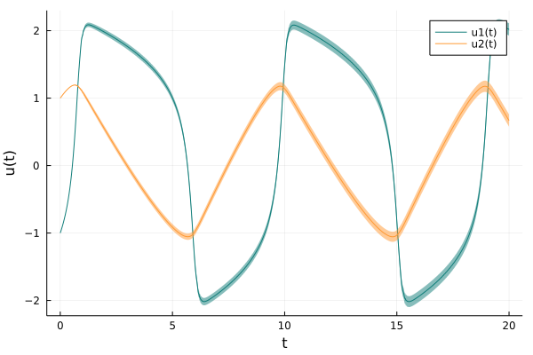
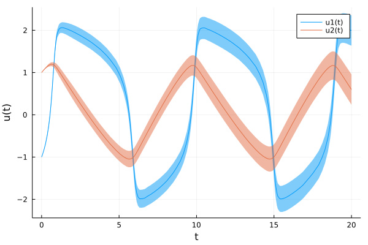

Solving ODEs with Probabilistic Numerics
In this tutorial we solve a simple non-linear ordinary differential equation (ODE) with the probabilistic numerical ODE solvers implemented in this package. If you are new to Julia and DifferentialEquations.jl, check out the DifferentialEquation.jl tutorial on how to solve ordinary differential equations with classic numerical solvers.
In this example, we consider a Fitzhugh-Nagumo model described by an ODE of the form
\[\begin{aligned} \dot{y}_1(t) &= c (y_1 - \frac{y_1^3}{3} + y_2) \\ \dot{y}_2(t) &= -\frac{1}{c} (y_1 - a - b y_2) \end{aligned}\]
on a time span $t \in [0, T]$, with initial value $y(0) = y_0$. In the following, we
- define the problem with explicit choices of initial values, integration domains, and parameters,
- solve the problem with our ODE filters, and
- visualize the results and the corresponding uncertainties.
TL;DR:
using ProbNumDiffEq, Plots
function fitz(du, u, p, t)
a, b, c = p
du[1] = c*(u[1] - u[1]^3/3 + u[2])
du[2] = -(1/c)*(u[1] - a - b*u[2])
end
u0 = [-1.0; 1.0]
tspan = (0., 20.)
p = (0.2, 0.2, 3.0)
prob = ODEProblem(fitz, u0, tspan, p)
sol = solve(prob, EK1())
plot(sol)
Step 1: Defining the problem
We first import ProbNumDiffEq.jl
using ProbNumDiffEqand then set up an ODEProblem exactly as we're used to with DifferentialEquations.jl, by defining the vector field
function fitz(du, u, p, t)
a, b, c = p
du[1] = c*(u[1] - u[1]^3/3 + u[2])
du[2] = -(1/c)*(u[1] - a - b*u[2])
endand then an ODEProblem, with initial value u0, time span tspan, and parameters p
u0 = [-1.0; 1.0]
tspan = (0., 20.)
p = (0.2, 0.2, 3.0)
prob = ODEProblem(fitz, u0, tspan, p)Step 2: Solving the problem
To solve the ODE we just use DifferentialEquations.jl's solve interface, together with one of the algorithms implemented in this package. For now, let's use EK1:
sol = solve(prob, EK1())That's it! we just computed a probabilistic numerical ODE solution!
Step 3: Analyzing the solution
The result of solve is a solution object which can be handled just as in DifferentialEquations.jl. We can access mean values by indexing sol
julia> sol[end]2-element Vector{Float64}: 2.0104405118668844 0.6383145073764125
or directly via sol.u
julia> sol.u[end]2-element Vector{Float64}: 2.0104405118668844 0.6383145073764125
and similarly the time steps
julia> sol.t[end]20.0
But we didn't use probabilstic numerics to just compute means. In fact, sol is a probabilistic numerical ODE solution and it provides Gaussian distributions over solution values. These are stored in sol.pu:
julia> sol.pu[end]Gaussian{Vector{Float64},ProbNumDiffEq.SquarerootMatrix{Float64, Matrix{Float64}, Matrix{Float64}}}([2.0104405118668844, 0.6383145073764125], [4.096496761174212e-9 1.275754329392645e-8; 1.275754329392645e-8 3.978550857551376e-8])
You can compute means, covariances, and standard deviations via Statistics.jl:
julia> using Statisticsjulia> mean(sol.pu[5])2-element Vector{Float64}: -0.8445349615757092 1.0618117231749666julia> cov(sol.pu[5])2×2 ProbNumDiffEq.SquarerootMatrix{Float64, Matrix{Float64}, Matrix{Float64}}: 7.84784e-12 3.49657e-13 3.49657e-13 7.56554e-12julia> std(sol.pu[5])2-element Vector{Float64}: 2.8014003609807354e-6 2.7505533924658773e-6
Dense output
Probabilistic numerical ODE solvers approximate the posterior distribution
\[p \Big( y(t) \mid \{ \dot{y}(t_i) = f_\theta(y(t_i), t_i) \} \Big),\]
which describes a posterior not just for the discrete steps but for any $t$ in the continuous space $t \in [0, T]$; in classic ODE solvers, this is also known as "interpolation" or "dense output". The probabilistic solutions returned by our solvers can be interpolated as usual by treating them as functions, but they return Gaussian distributions
julia> sol(0.45)Gaussian{Vector{Float64},ProbNumDiffEq.SquarerootMatrix{Float64, Matrix{Float64}, Matrix{Float64}}}([-0.2773821283086797, 1.1675659430627092], [1.0293538006222178e-9 1.5367920866648107e-10; 1.5367920866648107e-10 6.088943684144837e-10])julia> mean(sol(0.45))2-element Vector{Float64}: -0.2773821283086797 1.1675659430627092
Plotting
The result can be conveniently visualized through Plots.jl:
using Plots
plot(sol)A more detailed plotting tutorial for DifferentialEquations.jl + Plots.jl is provided here; most of the features work exactly as expected.
The uncertainties here are very low compared to the function value so we can't really see them. Just to demonstrate that they're there, let's solve the explicit EK0 solver, low order and higher tolerance levels:
sol = solve(prob, EK0(order=1), abstol=1e-2, reltol=1e-1)
plot(sol, denseplot=false)
There it is!